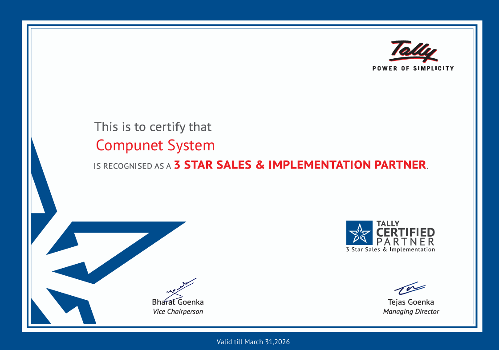

Our Tally Services
Delivering trusted support, training, and solutions to enhance your Tally experience.

We are Tally 3 Star Partner
AMC Services
Compunet System is an Authorised Tally Service Provider and in our AMC services company providing a full range of high quality, cost-effective information technology services to business worldwide. Our team comprises of people who have a passion for their area of work and believe in bringing the best for their company’s client. Compunet System provides a quality driven approach for their AMC clients and provide end-to-end solutions to meet requirements.
Today technology enables us to offer faster support without any physical presences on site, for this we provide support backed by team of remote experts, ensure quick recovery from any system failure, to our clients as little as downtime possible. In Tally AMC we covers whole year services which includes problem in licensing, Data related issues, Data split, Accounting Related problems, and inventory related problems in Days section. We also provide onsite surprise visit to our AMC customers.
Implementation Services
Tally and Busy both of this software are plug and play but to use any type of software as per your business environment it need a proper Implementation, for this our team plays a most important role. Implementation services address the unique complexities of your industry. Our consultants bring deep expertise in business and technology drivers and leading practices within major industries.
The key to a successful solution is making sure that your software is up and running quickly, while optimized to your specific business needs. We prepare case studies, a from of qualitative descriptive enquiry that is used to look at individuals, a small group of participants, or a group as a whole. Case studies collect data, the require and working process of all participants are following today and about the changes require by participants for using their software in future. With special attention to case studies we analysis the requirements of the clients and handle it with a full proof solutions to our clients.
Training Services
Training is fundamentally important for any types of Organizations. We work on your behalf to source the right training courses for your workforce. Over 10 years’ experience providing unrivalled customer service we give your workforce the knowledge and skills they need to meet your strategic goals – with a full set of Tally training courses designed to help you maximize the power of your Tally.ERP9.
We can help you create a comprehensive training plan, manage your talent, empower end users with both live and online courses – and drive greater proficiency across your organizations.
Password Recovery Services
Forget your password Tally Company Password? Need access to password protected DATA? Former employees leave without protecting their DATA without informing you? Passwords destroyed? We can help you! In Password recovery, we are experts at cracking password protected Data. Using our extensive library of software, techniques and programming resources we can provide you the password of the DATA too.
DATA Synchronization Services
A data synchronization service is a specialized type of business service used by a class of customers. The Informatics solution for data synchronization enables your IT organization to achieve accurate and consistent data across operational and transactional systems.
With this data synchronization solution, the Data of all your branches can merge at a single place your IT organization can quickly build business logic that handles any complex circumstances related to DATA of all Branches. The results are high performance, greater data accuracy and consistency, and a lower cost of ownership.
Customization Services
Customization of ERP software becomes necessary in every part of the technology and because of this technology development most of the organizations tend to customize their software as per their requirement. Customization is the process of fitting the chosen ERP software to the needs of a specific organization.
We are constantly engaged in meeting customers’ needs and requests. Development includes feature extensions, new features, integration with third-party products, user interface design, database integration we are having a highly experienced team of developers.
We customized ERP software which helps in finding exact solutions for your specific requirements. Such development can be installed easily on your existing Tally along with the central working model and leads to better revenue realization and profitability.
Our Company has been focusing on development of our own as well as clients’ products and as such we have good experience, exposure and expertise in creating customization Product to match and suit the clients’ requirements.